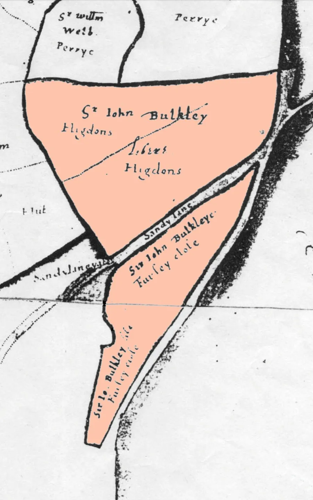
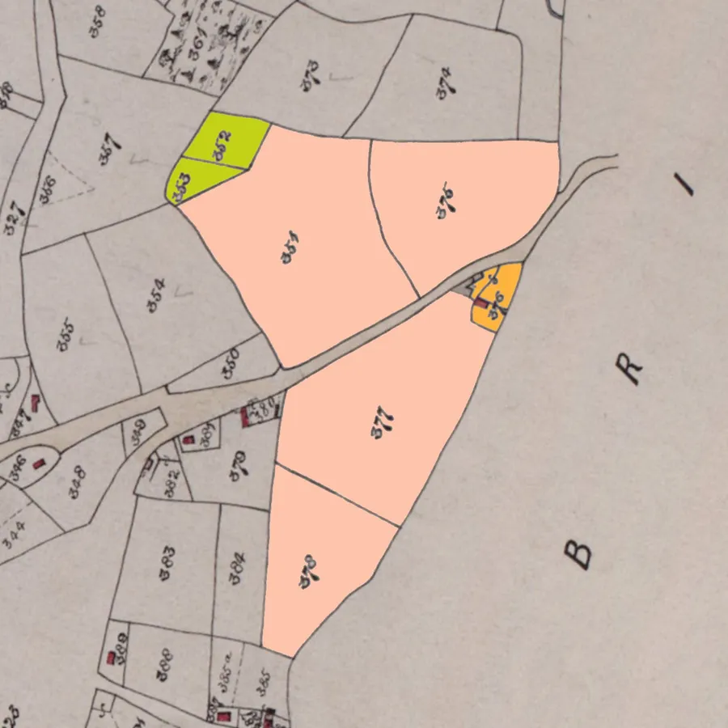
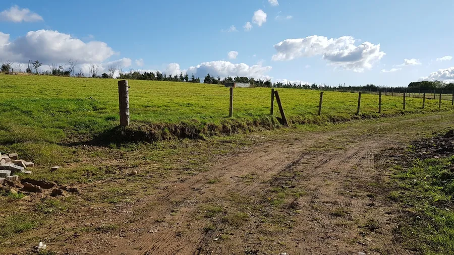
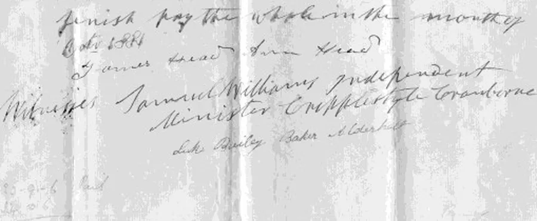
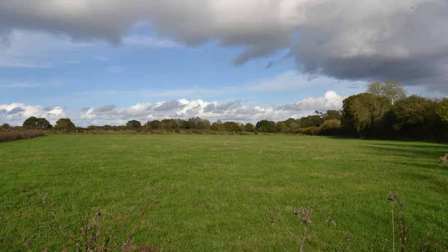
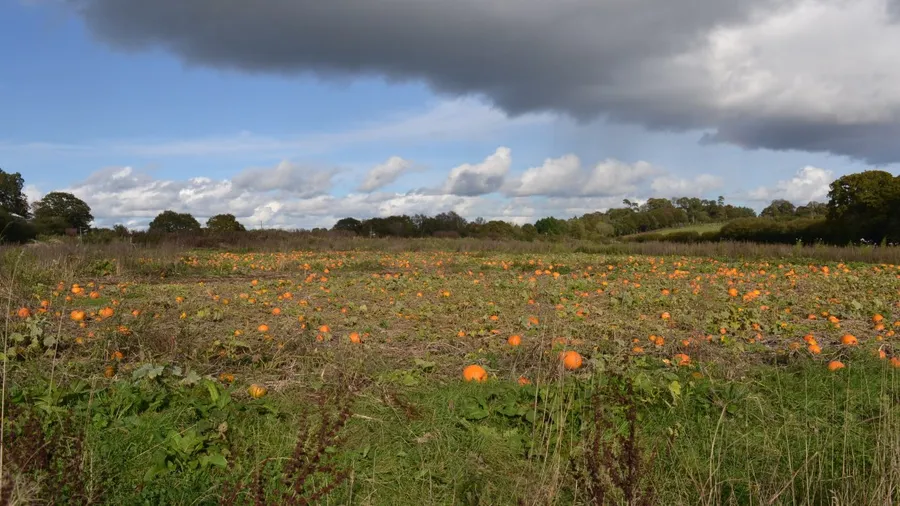
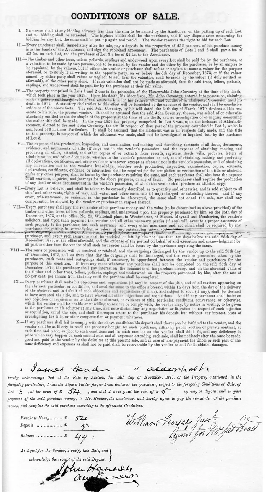

Bowerwood Farm
by Adrian King

As you drive from Fordingbridge to Alderholt you will pass a gateway on the left as you cross from Hampshire into Dorset. Much activity has taken place here in recent years. This is the site of Bowerwood Farm, also known as Boward, Bowers or Bower Farm. The buildings have long gone. The road beyond was called Sandy Lane on a map of 1605.
Perry Farm was to the north of the property.

On the 1849 Tithe Map the farm cmprised a house, yard, orchard and buildings (App376) with arable fields north of the Fordingbridge Road
- Little Higdens (App375)
- Hilly Higdens (App351)
and south of the Fordingbridge Road
- Barn Close (App377)
- Hall Stile Ground (App378)
Barn Close and Hall Stile Ground were previously known as Farley Close on the older map of 1605.
Footpath E34/5 crosses these fields and meets the county boundary near Wolvercrate Copse.
The pastures were Square Higdens (App352) and Peakes Higdens (App353) north of the Fordingbridge Road. Higdons e17 is derived from Cecelia Hykedon 1328.
Sir John Bulkley from Burgate House owned the farm in 1605. There were tenant and sub-tenant farmers.

In 1801 on the death of a John Bulkley/Coventry, John Coventry (1765–1829) inherited. On his death in 1829 his son also named John Coventry (1793–1871) inherited the farm.
In 1835 there is an indenture between John Viney and James Street to Henry Woodvine. In 1847 the farm was rented out by Richard Withers and Charles Viney was the tenant.
When John Coventry died in 1871 his third wife Ellen Wyndham Coventry took possession of Bowerwood Farm. Ellen must have given the farm to her stepson Frank Coventry who was an illegitimate son of John by his second wife.

After Ellen’s death on 11th August 1905 and because Frank also had died the farm was left to his sons who were Frank Chetwynd Coventry and John Wyndham Coventry. Frank Chetwynd Coventry made his mother Louisa Ellen Coventry attorney in 1919 to dispose of Bowerwood Farm.
After a devastating fire the farm was auctioned in three lots on Friday 14th November 1873.
Lot 1 consisted of The farmyard and the materials left from the late fire, together with the garden, orchard and arable field. (App376–378). Four loads of firewood from the New Forest were annually granted to this lot.
Lot 2 consisted of All those four fields called Higdens(App351–353 and App375).
Lot 3 was An Allotment in Alderholt Common no 38 on the Inclosure Commissioners Award. Its area was 1 acre 0 rods 4 perches and was occupied by Simon Lockyer.
Mr. Hannen ran the auction in the Greyhound Inn in Fordingbridge.
James and Ann Head bought Lot 3 for £54 for which they gave a deposit of £5 but they later sold it in 1881 to James Woodvine for £58. The sale document was witnessed by Rev. Samuel Williams (Independent Minister) and Luke Bailey (Baker, Alderholt).

In 1900 James Woodvine bought Bowerwood farm from the Coventry’s. James Mouland had been the previous tenant at the farm. In 1919 the farm was occupied by Woodvine and Parsons.
The Bowerwood fields were included in the Cross Farm Sandleheath Road fields and were still part of that property in the 1970’s but have since been sold.


Owners and Tenants
- John Viney 1835
- Henry Woodvine 1835
- George Coper/Coker 1841C
- Richard Withers, Charles Viney, and James Mouland 1847
- Thomas Webb 1861C
- James Woodvine 1900
- Woodvine and Parsons 1919
